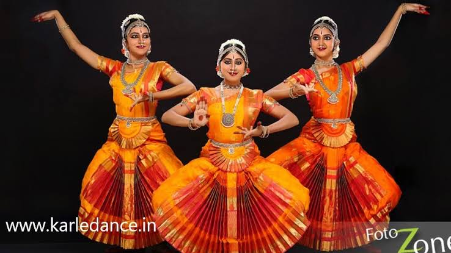
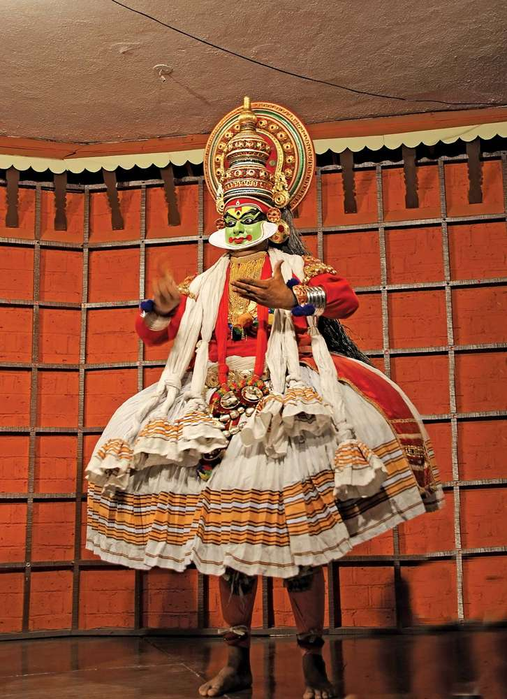
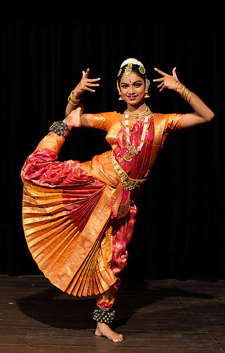

Dance is a performing art form consisting of purposefully selected sequences of human movement. This movement has aesthetic and symbolic value, and is acknowledged as dance by performers and observers within a particular culture.[nb 1] Dance can be categorized and described by its choreography, by its repertoire of movements, or by its historical period or place of origin. An important distinction is to be drawn between the contexts of theatrical and participatory dance,[4] although these two categories are not always completely separate; both may have special functions, whether social, ceremonial, competitive, erotic, martial, or sacred/liturgical. Other forms of human movement are sometimes said to have a dance-like quality, including martial arts, gymnastics, cheerleading, figure skating, synchronised swimming, marching bands, and many other forms of athletics.
Importance of Dance in our daily life:
Categories of Dance Styles:
| S No | Name of DanceForm | Belong to State | Image |
|---|---|---|---|
| 1. | Bharatnatyam | Tamil Nadu |  |
| 2. | Kathakali | Kerala |  |
| 3. | Odissi | Orissa | |
| 4. | Kuchipudi | Andhra Pradesh |  |